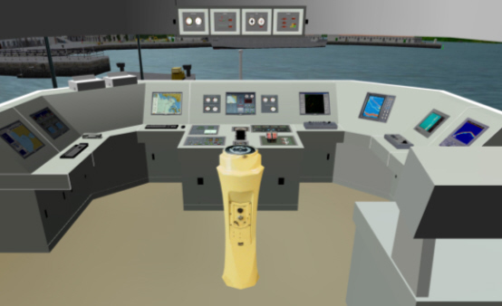

Introducción
El objeto de este Manual es proporcionar la información completa de la operatividad del Puesto de Alumno de los Simuladores de Navegación en sus dos versiones:
El Simulador se compone uno o varios Puestos de Alumno con el mismo o distintos niveles de equipamiento. Generalmente se instala al menos un Puente Principal completamente equipado con todos los elementos más usuales presentes en el puente de un buque moderno y uno o varios Puestos Auxiliares con un equipamiento reducido, en función de las necesidades didácticas a las que se destina.

En este Manual se describen de forma genérica todas las capacidades que el simulador pone a disposición del alumno. El acceso a cada una de estas capacidades estará o no estará disponible a través de paneles miméticos hardware o a través de paneles software dependiendo de la configuración final del simulador.